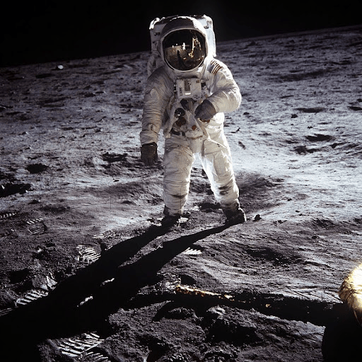

1969

Apollo 11
Apollo 11 est la mission spatiale qui a permis aux premiers êtres humains de marcher sur la Lune. Le 20 juillet 1969, Neil Armstrong et Buzz Aldrin ont foulé le sol lunaire, tandis que Michael Collins restait en orbite.
Cette mission historique a marqué l'apogée de la course à l'espace. Le voyage total a duré 8 jours, et les astronautes ont collecté 21,5 kg d'échantillons lunaires.
Anecdote : Le module lunaire s'est posé avec seulement 25 secondes de carburant restant ! Neil Armstrong a improvisé sa phrase iconique dans l'émotion du moment.